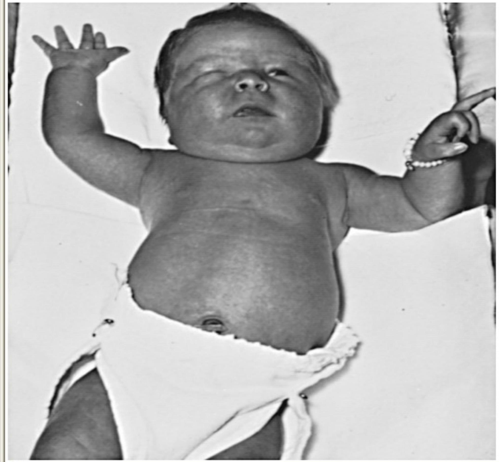

Infants with Maternal Health Conditions
INFANT OF A DIABETIC MOTHER
INTRODUCTION
- Women with diabetes in pregnancy (Type 1, Type 2, and gestational) are all at increased risk for adverse pregnancy outcomes. Adequate glycemic control before and during pregnancy is crucial to improving outcome
- Diabetic mothers have a high incidence of polyhydramnios, preeclampsia, preterm labor, and chronic hypertension;
- Their fetal mortality rate, especially after 32 wks, is greater than that of non diabetic mothers.
- Most infants born to diabetic mothers are large for gestational age.
- If the diabetes is complicated by vascular disease, infants may be growth restricted, especially those born after 37 wk gestation
- The neonatal mortality rate is over 5 times that of infants of non diabetic mothers and is higher at all gestational ages
PATHOPHYSIOLOGY
- The probable pathogenic sequence is that maternal hyperglycemia causes fetal hyperglycemia
- The fetal pancreatic response leads to fetal hyperinsulinemia
- Fetal hyperinsulinemia and hyperglycemia then cause increased hepatic glucose uptake and glycogen synthesis, accelerated lipogenesis, and augmented protein synthesis
- Hyperinsulinism and hyperglycemia produce fetal acidosis, which may result in an increased rate of stillbirth.
- Separation of the placenta at birth suddenly interrupts glucose infusion into the neonate without a proportional effect on the hyperinsulinism
- Hypoglycemia and attenuated lipolysis develop during the 1st hr after birth.
CLINICAL MANIFESTATIONS
They tend to be large and plump as a result of increased body fat and enlarged viscera, with puffy faces resembling that of patients who have been receiving corticosteroids
Other manifestations include:
- Hypoglycemia
- Tachypnea
- Cardiomegaly
- Increased incidence of: hyperbilirubinemia, polycythemia, and renal vein thrombosis
MANAGEMENT
- frequent prenatal evaluation of all pregnant women with overt or gestational diabetes, by evaluation of fetal maturity
- by planning the delivery of these infants in hospitals where expert obstetric and pediatric care is continuously available
- Periconception glucose control reduces the risk of anomalies and other adverse outcomes, and glucose control during labor reduces the incidence of neonatal hypoglycemia.
- Regardless of size, all infants of diabetic mothers should initially receive intensive observation and care.
- Asymptomatic infants should have a blood glucose determination within 1 hr of birth and then every hour for the next $6-8 \mathrm{hr}$;
- if clinically well and normoglycemic, feeding with breast milk or formula should be started as soon as possible and continued at 3 hr intervals.
- If any question arises about an infant's ability to tolerate oral feeding, the feeding should be discontinued and glucose given by peripheral intravenous infusion at a rate of $4-8 \mathrm{mg} / \mathrm{kg} / \mathrm{min}$
- Bolus injections of hypertonic glucose should be avoided because they may cause further hyperinsulinemia and potentially produce rebound hypoglycemia
COMPLICATIONS
- Macrosomia
- Hypoglycemia
- Polycythemia
- Respiratory distress syndrome
- cardiac failure
- cerebral edema from birth trauma
- asphyxia
FETAL ALCOHOL SYNDROME
OBJECTIVES
- Define FAS
- State the clinical presentation of babies with FAS
- Outline the physical characteristics of a baby with FAS
- Outline prevention of FAS
INTRODUCTION
Fetal alcohol syndrome (FAS) is a pattern of abnormalities with a child caused by exposure of alcohol to a fetus inutero
It is not known how much alcohol is needed to cause problems with the baby, and so it is generally recommended that no alcohol be drunk during pregnancy
NB: permanent damage can be caused to the fetus when the mother is not aware that she is pregnant
PRESENTATION
- Small size and slow development
- Sleeping difficulties
- Feeding difficulties
- Easily over-stimulated, sensitive to noise and light
- Birth defects such as heart problems, kidney problems, tumors and skeletal anomalies
- Susceptibility to infection
- Mental retardation
MANAGEMENT
- No specific management
- Create a supportive environment for the parents and children
- identify the specific needs: e.g. learning, safety
ASSIGNMENT
Neonatal Gastroenteritis:
- Definition
- Etiology: Common causative agents: from the most common
- Management: medical, nursing
- Prevention